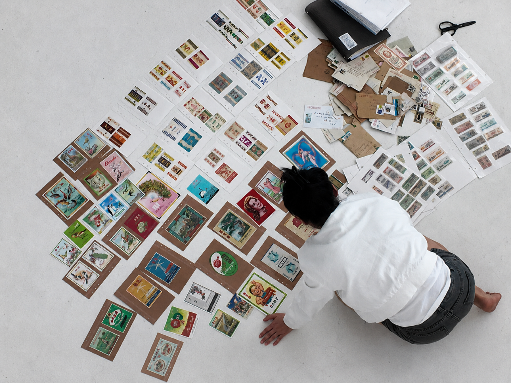
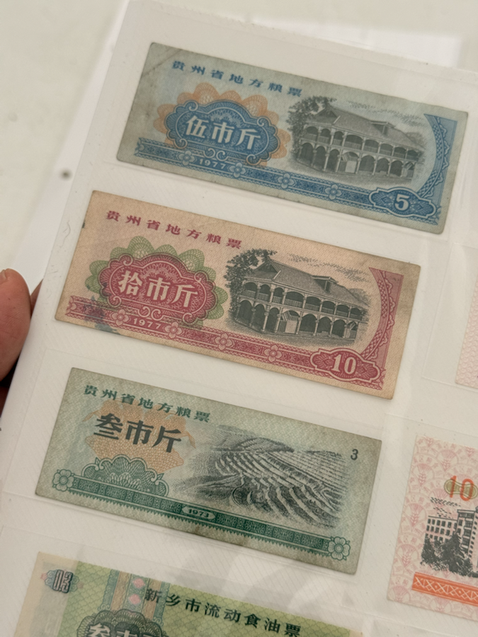
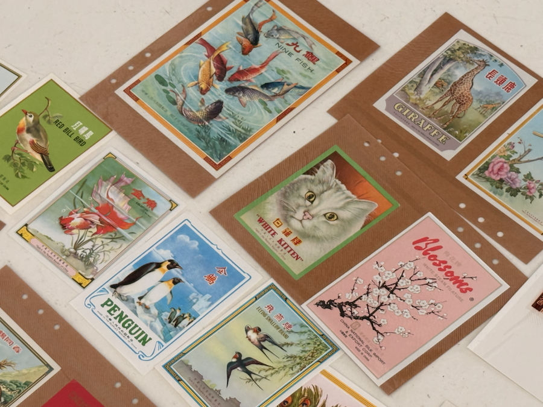
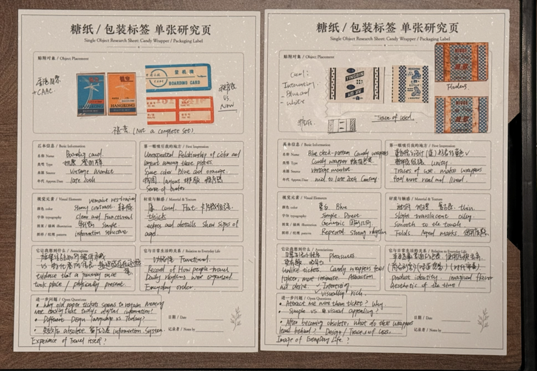
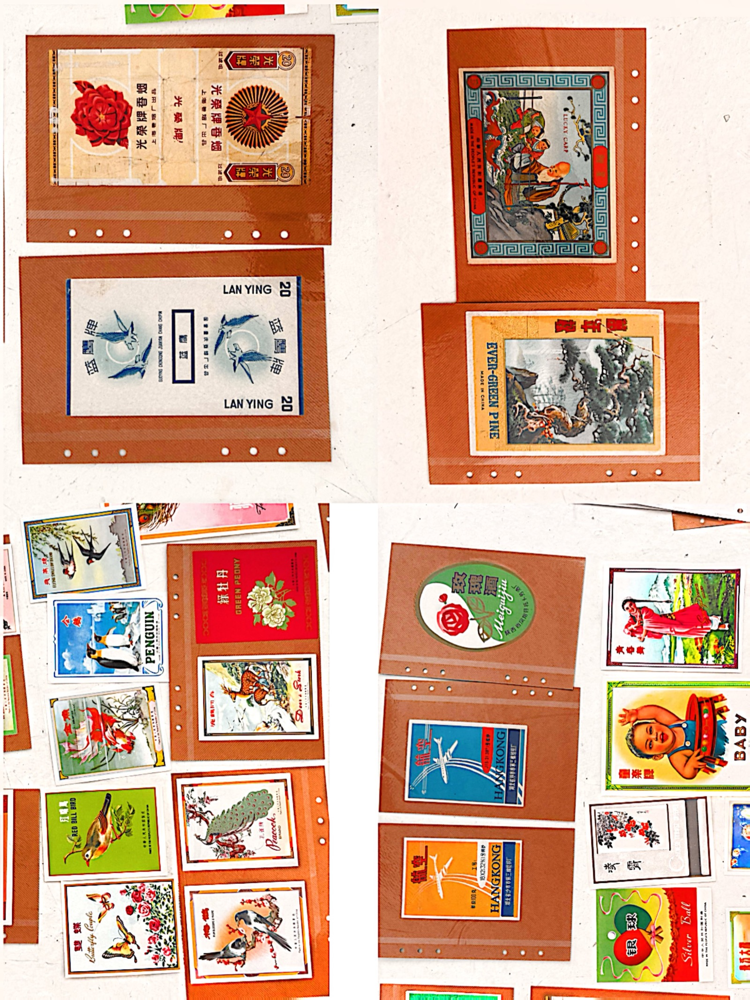
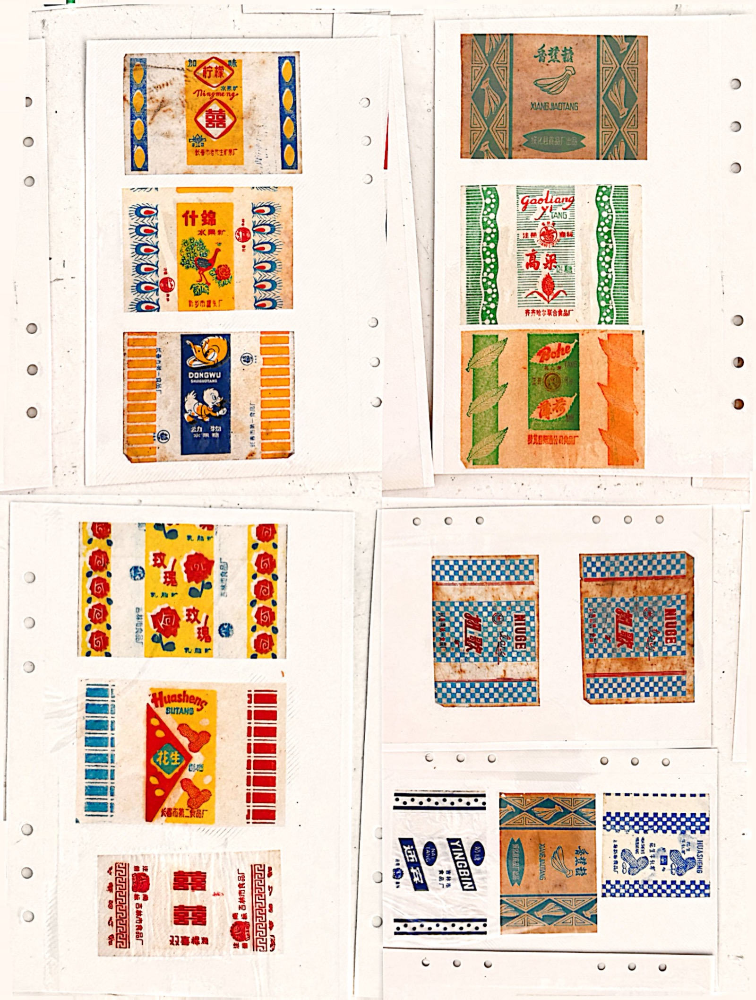

CURRENT PRACTICE / 03
THE BUREAU OF INVALIDATED TICKETS
失效票证管理局
Tickets, vouchers, wrappers, labels and other obsolete everyday paper objects.
I am not collecting rare objects. I am collecting visual systems that were once used.

Project
What the bureau studies
The project is not only about grain tickets. It studies two kinds of everyday paper traces: one that managed life, and one that decorated it.
The Bureau of Invalidated Tickets gathers obsolete printed matter that once circulated through ordinary life. Some objects functioned as permissions, quotas, payments or records. Others worked through colour, image, attraction and desire. After their use expires, these papers remain as small surfaces where systems, bodies and memory continue to meet.
The bureau is therefore not a fixed collection or a nostalgic display. It is a provisional research structure: objects are collected, photographed, grouped, filmed and written through in order to test how an old everyday visual system can still be read.
01
MOVING-IMAGE STUDY
The film follows the bureau as a quiet working process rather than as a finished artwork. Materials are touched, turned, compared and rearranged. The movement of the hand becomes part of the research method.
- Two-minute research cut with captions and no live recording sound.
- Focus: handling, grouping, comparison and material attention.
- Tone: calm documentary study for research presentation.
02
TWO PAPER SYSTEMS
The project separates the materials into two forces. Tickets and vouchers regulated life through quantity, eligibility, access and value. Wrappers and labels produced a different kind of everyday language through colour, image, desire and fantasy.


03
CLASSIFICATION AS METHOD
Classification is used here as a temporary research method, not as a final taxonomy. A single ticket is often cold and administrative; in groups, tickets begin to reveal region, repetition, value and traces of use. A single wrapper can feel alive through its image; in piles, wrappers become visually noisy. Each material therefore asks to be read differently.

04
OBSERVATION PAGES
The observation pages slow the project down. Each page takes one object or one material relation and asks: what did it regulate, what did it promise, what remains after its function is no longer active?


05
CURRENT INQUIRY
The bureau remains open. The current question is not how to finish the archive, but how obsolete paper can become a method for reading everyday systems of control, value, image and memory.